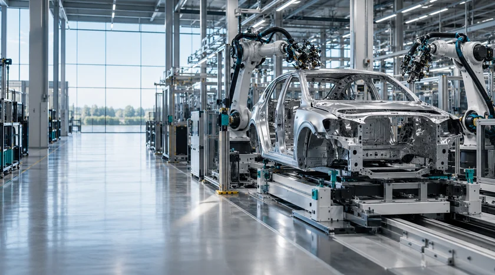
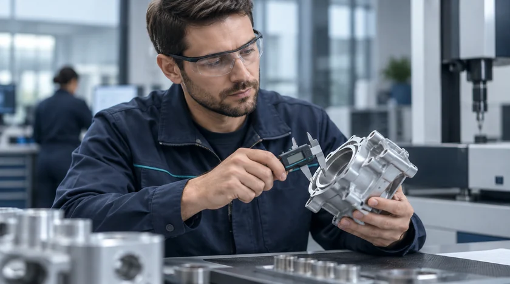
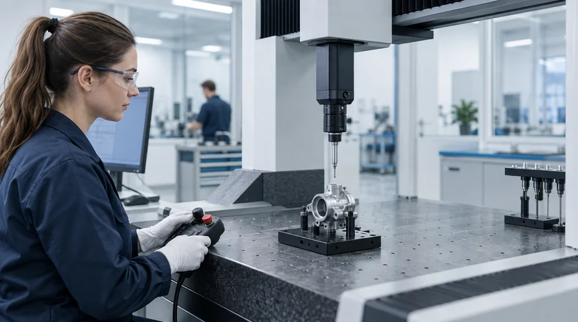
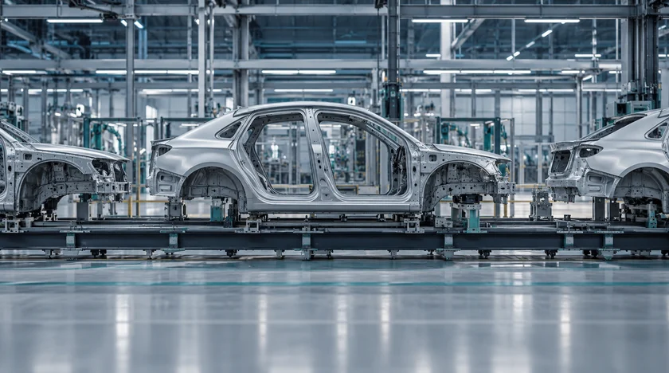
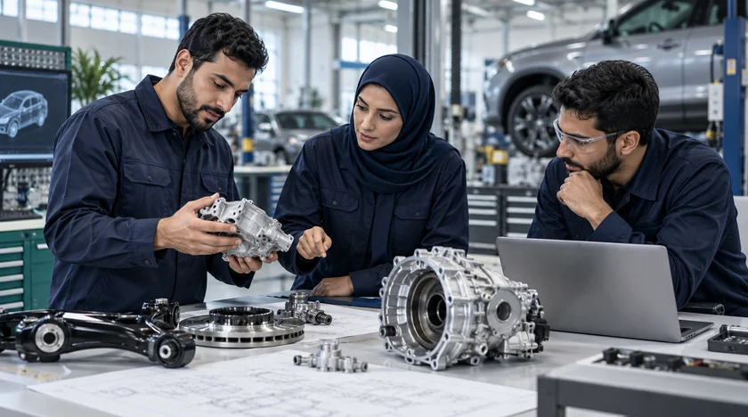

Mission
Enable five global Tier-1 automotive suppliers to establish localized manufacturing capabilities in Saudi Arabia, strengthening the Kingdom’s automotive supply chain and supporting its industrial development ambitions.

TASARU Supplier Hub is a wholly owned subsidiary of TASARU Mobility Investments, created to support five global Tier-1 suppliers in establishing critical automotive manufacturing capabilities in Saudi Arabia.
Enable five global Tier-1 automotive suppliers to establish localized manufacturing capabilities in Saudi Arabia, strengthening the Kingdom’s automotive supply chain and supporting its industrial development ambitions.
Contribute to a stronger, more localized automotive manufacturing ecosystem in Saudi Arabia.
TSH sits between global supplier expertise and Saudi production, providing the platform and foundations needed for the localization journey.
The Hub supports supplier establishment through dedicated industrial infrastructure under development, bringing together the physical and operational foundations required by the platform.
A dedicated physical base for supplier operations.

Five Tier-1 suppliers bring specialist manufacturing knowledge.

TSH supports the establishment of critical automotive manufacturing capabilities.

Critical components move closer to the Kingdom’s OEM base.
Localization strengthens the supply chain and supports industrial development.
TASARU Mobility Investments developed TSH. MASARAT Mobility Park™ provides the wider environment in which the supplier hub is located.
See the location contextDEVELOPER
Developer of the supplier hub.

Establishing local manufacturing brings together facilities, production capabilities and relationships across the automotive value chain. TSH places its five suppliers within a shared platform focused on this connection.
The result is a clearer link between global manufacturing knowledge and the needs of Saudi automotive production.
Explore the supplier ecosystemFor supplier, partnership, media or stakeholder inquiries, contact our team.